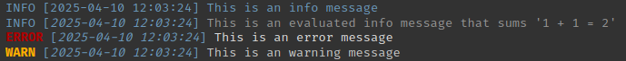

[[1]]
[1] 2
Systems Biomedicine Research Group
INESC-ID · Técnico Lisboa
2025-04-22
PhD from Técnico developing new omics models based on graph structures
Author and maintainer of üì¶glmSparseNet and üì¶shiny.telemetry
Part of the core team at üì¶teal framework at Roche
Contributor to Pharmaverse and R Consortium Submission working group
Learn some tricks and best practices
in {{
At the end you will be
motivated to develop better code
and to write reproducible code/results
üì¶renv to manage dependenciesüì¶memoisesource(...)Tricks
üì¶renv to manage dependenciesTricks
üì¶renv to manage dependenciesTricks
üì¶renv to manage dependenciesTricks
üì¶renv to manage dependenciesTricks
install.packages("renv")
renv::init() # Initialize the renv enviroment
install.packages("dplyr")
renv::install("dplyr")
renv::install("bioc::glmSparseNet")
renv::install("sysbiomed/glmSparseNet")
renv::snapshot() # to save installed packages & versions lockfile
renv::restore() # to restore same versionsTricks
library(rsample)
car_split <- initial_split(mtcars)
train_data <- training(car_split)
test_data <- testing(car_split)vs.
Tricks
if (condition) {
foo <- bar()
foo <- dplyr::filter(zoo %in% whoo)
} else {
return(something)
}
if (condition2) {
stop("This is an error)
}vs.
Tricks
üì¶loggerlogger::log_info("This is an info message")
foo <- "evaluated info"
logger::log_layout(logger::layout_glue_colors)
logger::log_info("This is an {foo} message that sums '1 + 1 = { 1 + 1 }'")
logger::log_error("This is an error message")
logger::log_warn("This is an warning message")
Using these will make your life easier
|> Pipe operator
%||%sapply vs. for (x in z) { ... }Filter() / Reduce()|> Pipe operatorBase
Pipe a value into a call expression or a function expression.
Let’s create a trail of function calls
[1] -1.6078826 -1.6078826 -1.1267104 -0.9607889 -0.8944204 -0.8446439
[7] -0.8114596 -0.8114596 -0.7616832 -0.7119067 -0.6123539 -0.4630246
[13] -0.3800638 -0.3302874 -0.2307345 -0.1477738Same, but with pipes
[1] -1.6078826 -1.6078826 -1.1267104 -0.9607889 -0.8944204 -0.8446439
[7] -0.8114596 -0.8114596 -0.7616832 -0.7119067 -0.6123539 -0.4630246
[13] -0.3800638 -0.3302874 -0.2307345 -0.1477738|> Pipe operatorBase
Let’s create a trail of function calls
[1] -1.6078826 -1.6078826 -1.1267104 -0.9607889 -0.8944204 -0.8446439
[7] -0.8114596 -0.8114596 -0.7616832 -0.7119067 -0.6123539 -0.4630246
[13] -0.3800638 -0.3302874 -0.2307345 -0.1477738Same, but with pipes
[1] -1.6078826 -1.6078826 -1.1267104 -0.9607889 -0.8944204 -0.8446439
[7] -0.8114596 -0.8114596 -0.7616832 -0.7119067 -0.6123539 -0.4630246
[13] -0.3800638 -0.3302874 -0.2307345 -0.1477738|> Pipe operatorBase
Let’s create a trail of function calls
Same, but with pipes
|> Pipe operatorBase
grepl() usage if you do not know by heart
%||% Null Coalesce operatorBase
[1] 1vs.
[1] 1sapply() / vapply() / …Base
mclapply()When using lapply() or sapply() on large datasets, you can use mclapply() to parallelize the process.
library(parallel)
m <- \(x_long) mclapply(
x_long,
mean,
mc.cores = 4,
mc.preschedule = TRUE # 4 cores running each 1/4 of the input
# vs. FALSE where 1 fork is created for each input
)
x_long <- rep(x, 30000) # let's make it worth it
bench::mark(
"for" = f(x_long), "sapply" = s(x_long), "vapply" = v(x_long), "mclapply" = m(x_long), memory = FALSE, check = FALSE
)# A tibble: 4 × 6
expression min median `itr/sec` mem_alloc `gc/sec`
<bch:expr> <bch:tm> <bch:tm> <dbl> <bch:byt> <dbl>
1 for 7.89s 7.89s 0.127 NA 93.0
2 sapply 274.94ms 285.42ms 3.50 NA 17.5
3 vapply 279.74ms 281.36ms 3.55 NA 16.0
4 mclapply 141.07ms 161.6ms 6.15 NA 38.4Base
Reduce() / Filter()Base
Keep an eye in a few slides for üì¶purrr that has similar functions
local()Useful for when you create a lot of intermediate variables that are never necessary.
Base
üì¶dplyrtidyverse
A grammar of data manipulation
üì¶dplyr is an acceptable exception to the practice of prefixing function calls with package name.
Manual approach
The same with stats::ave()
The same in data.tables
üì¶tidyrtidyverse
Original data
# A tibble: 18 × 11
religion `<$10k` `$10-20k` `$20-30k` `$30-40k`
<chr> <dbl> <dbl> <dbl> <dbl>
1 Agnostic 27 34 60 81
2 Atheist 12 27 37 52
3 Buddhist 27 21 30 34
4 Catholic 418 617 732 670
5 Don’t kn… 15 14 15 11
6 Evangeli… 575 869 1064 982
7 Hindu 1 9 7 9
8 Historic… 228 244 236 238
9 Jehovah'… 20 27 24 24
10 Jewish 19 19 25 25
# ℹ 8 more rows
# ℹ 6 more variables: `$40-50k` <dbl>,
# `$50-75k` <dbl>, `$75-100k` <dbl>,
# `$100-150k` <dbl>, `>150k` <dbl>,
# `Don't know/refused` <dbl>tidyr::pivot_longer()
# A tibble: 180 × 3
religion income count
<chr> <chr> <dbl>
1 Agnostic <$10k 27
2 Agnostic $10-20k 34
3 Agnostic $20-30k 60
4 Agnostic $30-40k 81
5 Agnostic $40-50k 76
6 Agnostic $50-75k 137
7 Agnostic $75-100k 122
8 Agnostic $100-150k 109
9 Agnostic >150k 84
10 Agnostic Don't know/refused 96
# ℹ 170 more rowsüì¶tidyrtidyverse
Original data
tidyr::pivot_wider()
tidyr::fish_encounters |>
tidyr::pivot_wider(names_from = station, values_from = seen) |>
print(width = 60, n = 10)# A tibble: 19 × 12
fish Release I80_1 Lisbon Rstr Base_TD BCE BCW
<fct> <int> <int> <int> <int> <int> <int> <int>
1 4842 1 1 1 1 1 1 1
2 4843 1 1 1 1 1 1 1
3 4844 1 1 1 1 1 1 1
4 4845 1 1 1 1 1 NA NA
5 4847 1 1 1 NA NA NA NA
6 4848 1 1 1 1 NA NA NA
7 4849 1 1 NA NA NA NA NA
8 4850 1 1 NA 1 1 1 1
9 4851 1 1 NA NA NA NA NA
10 4854 1 1 NA NA NA NA NA
# ℹ 9 more rows
# ℹ 4 more variables: BCE2 <int>, BCW2 <int>, MAE <int>,
# MAW <int>üì¶purrrtidyverse
üì¶gluetidyverse
Easy function to generate strings
glue() has access to the environment and can evaluate expressions
title <- "Code in R like a rockstar üé∏"
glue::glue("The current time is {Sys.time()}\n and the title of this presentation is: '{title}'")The current time is 2025-04-22 16:06:05.648372
and the title of this presentation is: 'Code in R like a rockstar üé∏'Data can come from other sources, such as a dataframe (a list or an environment)
üì¶ggplot2 (source gist){.absolute left=0 right=0 top=40 style=‚Äúmargin: auto auto; }
üì¶ggplot2üì¶memoiseMemoisation is an optimization technique to speed up computer programs by storing the results of expensive function calls and returning the cached result when the same inputs occur again
üì¶memoisep_value# Auxiliary function to generate x and y from a split
gen_x_y <- \(fun, split, dat = fun(split)) list(
x = model.matrix(surv_obj ~ age + sex + ph_ecog + wt_loss, data = dat)[, -1],
y = dat$surv_obj
)
cache <- cachem::cache_disk("cache") # Use local disk cache (tweak `max_size` for your needs)
#
# Build data
lung <- na.omit(survival::lung) |>
dplyr::mutate(
.keep = "none",
surv_obj = survival::Surv(time, status == 2),
event = status == 2, age, sex = factor(sex), ph_ecog = factor(ph.ecog),
wt_loss = wt.loss
)
cv_model <- memoise::memoise(glmnet::cv.glmnet)üì¶memoisep_valueüì¶memoisep_valuelung_test <- gen_x_y(rsample::testing, split)
set.seed(seed * 42) # Just in case
tryCatch( # Logrank test and extract p-value (defaults to 1 if only 1 group
cvfit |>
stats::predict(newx = lung_test$x, s = "lambda.min", type = "link") |>
dplyr::tibble(risk_score = _, y = lung_test$y) |>
dplyr::mutate(risk_group = dplyr::if_else(risk_score > median(risk_score), "high", "low")) |>
dplyr::select(-risk_score) |>
survival::survdiff(y ~ risk_group, data = _) |>
.subset2("pvalue"),
error = \(e) 1 # In case there is only 1 group
)üì¶memoisep_valuelung_test <- gen_x_y(rsample::testing, split)
set.seed(seed * 42) # Just in case
tryCatch( # Logrank test and extract p-value (defaults to 1 if only 1 group
cvfit |>
stats::predict(newx = lung_test$x, s = "lambda.min", type = "link") |>
dplyr::tibble(risk_score = _, y = lung_test$y) |>
dplyr::mutate(risk_group = dplyr::if_else(risk_score > median(risk_score), "high", "low")) |>
dplyr::select(-risk_score) |>
survival::survdiff(y ~ risk_group, data = _) |>
purrr::pluck("pvalue"),
error = \(e) 1 # In case there is only 1 group
)üì¶memoisep_valuetictoc::tic(tic_str)
p_values <- vapply(
seq_len(200),
\(seed) {
set.seed(seed)
# Split the data in 80% training / 20% testing
split <- rsample::initial_split(lung, prop = 0.8, strata = "event")
lung_train <- gen_x_y(rsample::training, split)
cvfit <- cv_model(lung_train$x, lung_train$y, family = "cox") # fit model
lung_test <- gen_x_y(rsample::testing, split)
set.seed(seed * 42) # Just in case
tryCatch( # Logrank test and extract p-value (defaults to 1 if only 1 group
cvfit |>
stats::predict(newx = lung_test$x, s = "lambda.min", type = "link") |>
dplyr::tibble(risk_score = _, y = lung_test$y) |>
dplyr::mutate(risk_group = dplyr::if_else(risk_score > median(risk_score), "high", "low")) |>
dplyr::select(-risk_score) |>
survival::survdiff(y ~ risk_group, data = _) |>
purrr::pluck("pvalue"),
error = \(e) 1 # In case there is only 1 group
)
},
FUN.VALUE = double(1L)
) |>
sort() |>
dplyr::tibble(p_value = _) |>
dplyr::mutate(cdf = seq_along(p_value) / length(p_value))
tictoc::toc()üì¶memoisep_value#
# Nice cumulative distribution plot
p_values |>
dplyr::mutate(
max_significant = p_value == max(p_value[p_value <= 0.05]),
label = dplyr::if_else(max_significant, glue::glue("y = {cdf} / p_value = {round(p_value, 5)}"), NA_character_),
yintercept = dplyr::if_else(max_significant, cdf, NA),
) |>
ggplot2::ggplot(ggplot2::aes(x = p_value, y = cdf, label = label)) +
ggplot2::geom_line(color = "blue") +
ggplot2::geom_ribbon(ggplot2::aes(ymin = 0, ymax = cdf), alpha = 0.1) +
ggplot2::geom_vline(xintercept = 0.05, linetype = "dashed", color = "red") +
ggplot2::geom_hline(ggplot2::aes(yintercept = yintercept), na.rm = TRUE, linetype = "dashed", color = "gray") +
ggplot2::geom_label(nudge_x = .05, nudge_y = -.05, hjust = 0, na.rm = TRUE, fill = "white") +
ggplot2::labs(title = "Cumulative Distribution of p-values",
x = "p-value",
y = "Empirical CDF") +
ggplot2::expand_limits(x = c(0, 1), y = c(0, 1)) +
ggplot2::theme_minimal()üì¶memoisefull run: 10.761 sec elapsedmemoise run: 3.052 sec elapsedparams: property in rmarkdown titlermarkdown::render() Great tools to communicate results
You can use it to generate reproducible results
params: property in rmarkdown titlermarkdown::render() props <- c(.8, .7)
folds <- c(10, 5)
seed <- 2025 + seq_len(10)
dir.create("Results/reports", showWarnings = FALSE)
purrr::walk(seed, \(s)
purrr::walk(props, \(x)
purrr::walk(folds, \(y)
rmarkdown::render(
"network.Rmd",
output_file = glue::glue("Results/reports/network_{s}_{x}_{y}.html"),
params = list(props = x, folds = y, seed = s))
)
)
)Add to the end of an Rmarkdown:
## Add to end of chunk
list(results = list()) |> as.environment() # Boilerplate
results_path <- here::here("results_rmarkdown.RData") # Path to save
if (file.exists(results_path)) load(results_path, envir = env) # Load if exists
env$results[[length(env$results) + 1]] <- list( # Add new result
params = params, # Params from rmarkdown
date= Sys.time() # Current time (in case you want to filter)
result = a_result, # A result
model = a_model # Any other objects you want to save
)
save("results", file = results_path, envir = env)source filesIf you really need, use relative paths:
here::here("./another.R") (in current directory)here::here("../something.R") (in parent directory)here::here("./folder/to/script.R") (in one of the folders)source()üì¶box is a package that allows to import functions from other scripts
source(...) but it doesn’t run anything in the current environment<filename>$<fun_name>source()The real power comes from the restricted scope it can operate in.
a_variable is not overwritten
# üìÑ report.Rmd
a_variable <- 2
box::use(mod/another)
another$log("a_variable has value: {a_variable}")[LOG MESSAGE] a_variable has value: 2While with source() it is
source()Create your own R package
(let’s try a live demo if we have time)